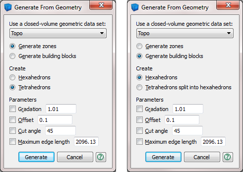

根据几何数据生成网格单元或块体
导入几何数据后，您可以使用工具栏中的“根据几何生成…”按钮（ ）创建网格单元或块体。
）创建网格单元或块体。


如果当前块体集合中加载了多个几何数据集，您需要选择根据哪个几何集生成网格单元或块体。
如果选择生成网格单元，则将跳过创建块体这一步骤。您可以选择创建六面体或四面体。可以在模型窗格或绘图窗格中查看这些网格单元。
如果选择生成块体，则当前块体集合将保持不变，并会创建一个新的集合来容纳新块体。您可以选择直接创建六面体，或创建随后被拆分为六面体的四面体。
参数说明可在以下位置找到：单元生成从几何（zone generate from-geometry）
| 这些内容对您有帮助吗？… | FLAC3D © 2019, Itasca | 原文更新于 2020 年 10 月 8 日 |